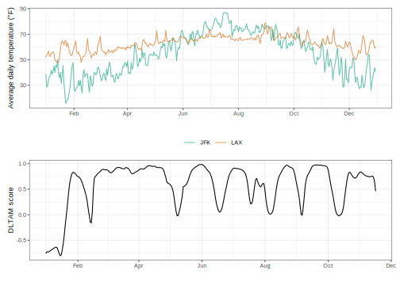

This package implements the calculation of the dynamic local trend association measure (DLTAM) for a pair of time series, proposed by García-López, F. J., Batyrshin, I., and Gelbukh, A., in the paper “Dynamic Local Trend Associations in Analysis of Comovements of Financial Time Series”.
Installation
You can install this package using:
# install.packages("remotes")
remotes::install_github("adamoshen/dltam")Basic usage
Suppose we are interested in the DLTAM of average daily temperature readings at JFK and LAX airports. This data can be found in the loco package. A quick preview of the data:
daily_temperature %>%
group_by(origin) %>%
slice_head(n = 6) %>%
group_split()
#> <list_of<
#> tbl_df<
#> origin: character
#> date : date
#> temp : double
#> >
#> >[2]>
#> [[1]]
#> # A tibble: 6 × 3
#> origin date temp
#> <chr> <date> <dbl>
#> 1 JFK 2013-01-01 38.9
#> 2 JFK 2013-01-02 28.5
#> 3 JFK 2013-01-03 29.8
#> 4 JFK 2013-01-04 34.0
#> 5 JFK 2013-01-05 36.9
#> 6 JFK 2013-01-06 37.4
#>
#> [[2]]
#> # A tibble: 6 × 3
#> origin date temp
#> <chr> <date> <dbl>
#> 1 LAX 2013-01-01 51.8
#> 2 LAX 2013-01-02 54.0
#> 3 LAX 2013-01-03 55.0
#> 4 LAX 2013-01-04 56.9
#> 5 LAX 2013-01-05 52.9
#> 6 LAX 2013-01-06 52.7First, we require a data frame containing the two time series’ data as columns.
daily_temperature_wide <- daily_temperature %>%
pivot_wider(id_cols=date, names_from=origin, values_from=temp)
daily_temperature_wide
#> # A tibble: 364 × 3
#> date JFK LAX
#> <date> <dbl> <dbl>
#> 1 2013-01-01 38.9 51.8
#> 2 2013-01-02 28.5 54.0
#> 3 2013-01-03 29.8 55.0
#> 4 2013-01-04 34.0 56.9
#> 5 2013-01-05 36.9 52.9
#> 6 2013-01-06 37.4 52.7
#> 7 2013-01-07 41.9 55.2
#> 8 2013-01-08 38.7 55.3
#> 9 2013-01-09 40.8 56.1
#> 10 2013-01-10 45.0 55.0
#> # ℹ 354 more rowsThe DLTAM scores can be obtained by passing daily_temperature_wide to dltam::dltam(). Following the example in the paper, which used daily data, we set the window size to 30 and the Moving Approximation Transform sequence size to 16.
dltam_scores <- daily_temperature_wide %>%
dltam(JFK, LAX, timestamp=date, window_size=30, mat_seq_size=16)
dltam_scores
#> # A tibble: 320 × 2
#> timestamp score
#> <date> <dbl>
#> 1 2013-01-01 -0.759
#> 2 2013-01-02 -0.728
#> 3 2013-01-03 -0.729
#> 4 2013-01-04 -0.724
#> 5 2013-01-05 -0.713
#> 6 2013-01-06 -0.695
#> 7 2013-01-07 -0.681
#> 8 2013-01-08 -0.669
#> 9 2013-01-09 -0.652
#> 10 2013-01-10 -0.642
#> # ℹ 310 more rowsWe can now plot the DLTAM scores and identify time points of particular interest.
p1 <- ggplot(daily_temperature) +
geom_line(aes(x=date, y=temp, colour=origin), alpha=0.6) +
scale_colour_manual(values = c("#009E73", "#D55E00")) +
scale_x_date(date_breaks="2 months", date_labels="%b") +
labs(x="", y="Average daily temperature (°F)", colour="") +
theme_bw(base_size = 9) +
theme(legend.position = "bottom")
p2 <- ggplot(dltam_scores) +
geom_line(aes(x=timestamp, y=score), colour="black") +
scale_x_date(date_breaks="2 months", date_labels="%b") +
labs(x="", y="DLTAM score") +
theme_bw(base_size = 9)
p1 / p2